Hidden Walls is a responsive web experience that showcases three hidden street art locations in Aarhus. The project combines storytelling, photography, and interactive design to encourage users to discover places that are often overlooked while learning about the local urban art scene.
Problem
Many unique street art locations remain hidden from both tourists and locals because there is no engaging platform that presents them as part of a connected experience. Existing map services provide directions but fail to communicate the culture, history, and atmosphere behind these locations.
Goal
The goal was to design and develop a responsive website that inspires exploration through an intuitive user experience, strong visual storytelling, and interactive features. The project focused on translating user research into a solution that helps visitors easily discover, navigate, and connect with Aarhus' hidden street art.
01.1 Foundational Research
To create a solution that reflected real user needs, I combined
desk research, user interviews, and on-site observations. This
research helped me understand both the cultural context of Aarhus'
street art and how people discover, experience, and navigate these
hidden locations.
The interviews revealed that users value
visual inspiration, simple navigation, and contextual information
such as the story behind each artwork and artist. Most participants
relied on their smartphones when exploring the city and wanted a
website that was visually engaging, easy to use, and supported route
planning. Observations of the locations complemented these findings
by highlighting
accessibility, visibility,
and the overall
atmosphere
of each place, ensuring the final experience was grounded in
real-world use.
01.2 Target Group
Based on the research findings, the website was designed for
young people aged 15–30, primarily students,
young professionals, and international visitors living in Aarhus.
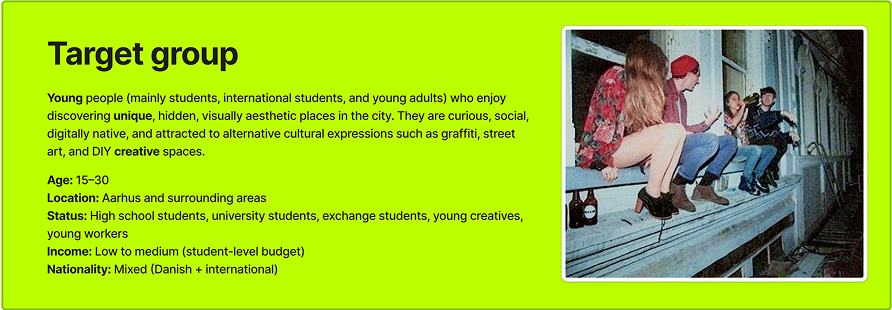
The design prioritizes visual content, intuitive navigation, and
location-based exploration to match their browsing habits and
expectations.
01.3 Problem Statement
How can I design and develop a responsive experience website that
helps users discover three hidden street art locations in Aarhus,
while providing relevant information, strong visual storytelling,
and an intuitive user experience across both mobile and desktop
devices?
02.1 User Persona
Based on the research insights, I created a user persona to represent the primary target audience and keep user needs at the center of the design process. The persona helped guide decisions around content, navigation, and functionality by translating research findings into a realistic user with clear goals, motivations, and pain points.
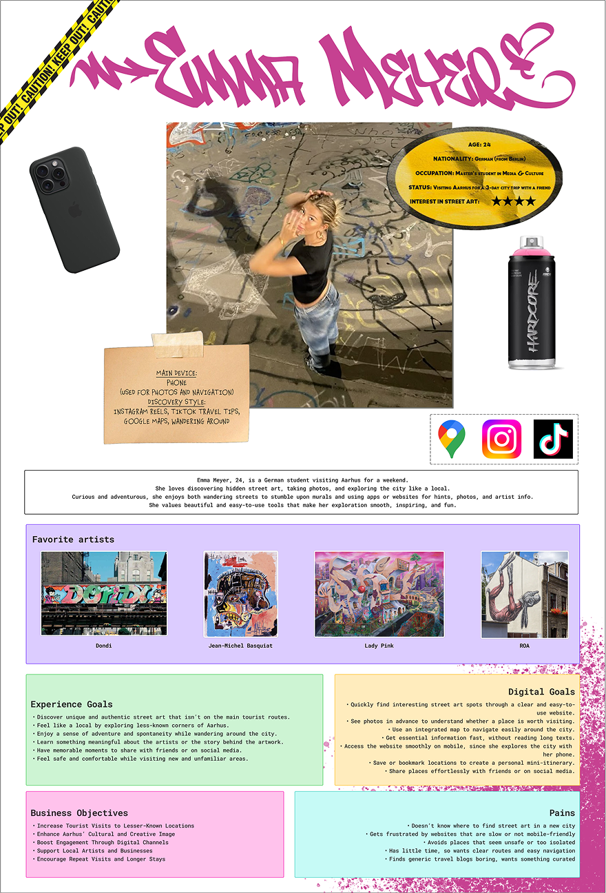
Emma, a 24-year-old international student visiting Aarhus, reflects the needs of users looking for authentic local experiences.
Her preference for mobile navigation, visual inspiration, and quick access to information directly influenced the website's responsive design, interactive map, and emphasis on photography and storytelling.
02.2 Values
The research findings were translated into a set of core values that guided both the visual identity and the user experience. These values ensured the website communicated not only information about the locations but also the feeling of exploring Aarhus' hidden street art culture.
The project focused on creativity, adventure, and community to inspire exploration, while safety and local appreciation ensured users felt confident discovering unfamiliar places and gained a deeper connection to the city's artistic identity. An underground aesthetic and a youthful visual language reinforced the authentic, alternative character of the experience.
02.3 Define the User’s Needs and Problems
Based on the research insights, I formulated a series of How Might We questions to translate user needs into actionable design opportunities. These questions helped prioritize the features and content that would create a more engaging and accessible experience.
HOW MIGHT WE...
Help users discover hidden or lesser-known street art without taking away
the sense of exploration?
Make street art approachable for users who don’t know anything about
graffiti culture?
Make it easy for users to share spots or photos with friends and on social
media?
Present just the right amount of information without overwhelming users
on mobile screens?
Make it easy and safe for tourists to navigate to graffiti spots in
unfamiliar neighborhoods?
The Value Proposition Canvas was used to connect the
insights gathered during research with the final solution. It helped ensure
that the website's features addressed users' goals, solved key pain points,
and delivered a meaningful experience.
ThE USEr:
Jobs:
Discover hidden street art, learn the stories behind the artworks,
plan visits, and navigate safely.
Gains:
Easy navigation, inspiring visuals, meaningful context,
and a fun, memorable exploration experience.
Pains:
Hidden locations are difficult to find, information is often
limited, and existing websites can feel cluttered or difficult
to use on mobile.
ThE SOLUTION:
Products & Services:
A responsive website featuring an interactive map, curated
location pages, photography, artist stories, and mobile-friendly
navigation.
Pain Relievers:
Clear directions, concise content, intuitive UI, accessibility
considerations, and contextual information for each location.
Gain Creators:
High-quality visuals, engaging storytelling, smooth interactions,
and a curated experience that encourages exploration while
preserving the feeling of discovery.
02.4 Design Process and User Testing
•
Sketches and User Flow
Initial sketches were used to quickly explore different
layouts and navigation ideas before creating wireframes, helping identify
the most intuitive user experience.
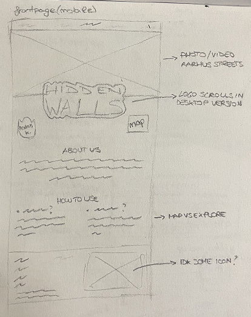
Frontpage (mobile version)
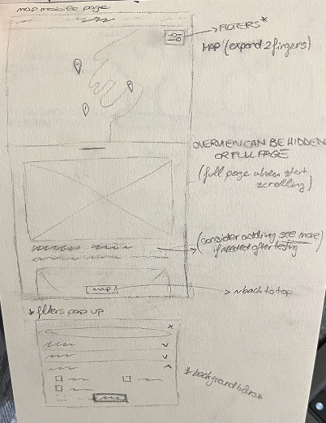
Map Page (mobile version)
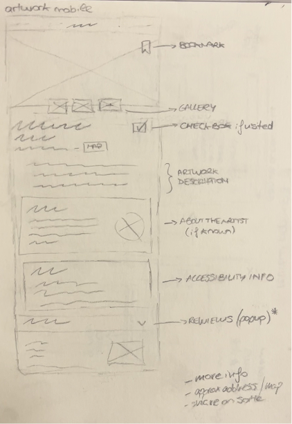
Artwork Detail Page (mobile version)
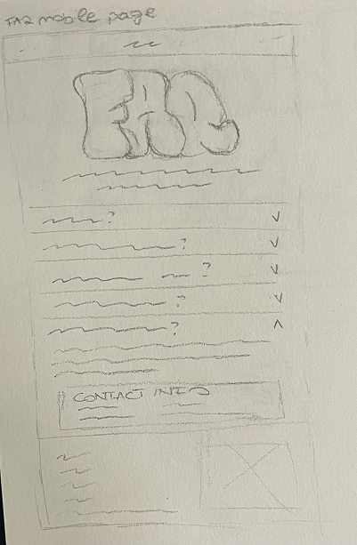
FAQ Page (mobile version)
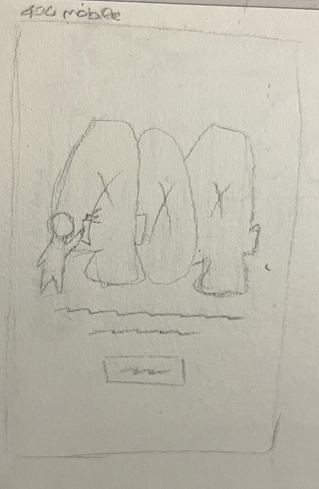
404 Page (mobile version)
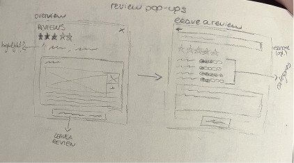
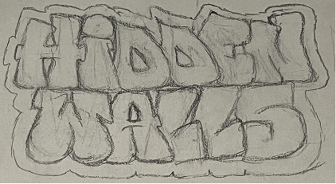
Pop-ups and Logo
The user flow was designed to guide users from discovering the website to exploring street art locations through simple navigation and clear access to maps, images, and artwork information.
Based on the research, I created two calls-to-action on the homepage: "Go with the Flow" for users who prefer to casually browse a curated list of artworks, and "No Time to Lose" for users who want to quickly plan their visit using the interactive map. Both paths lead to The Walls page, where users can switch seamlessly between the list and map depending on their goal.
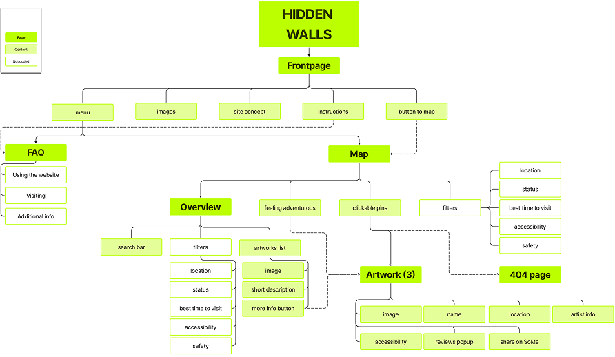
•
Visual Identity
The moodboard defined the project's visual direction,
capturing the creative and urban atmosphere of Aarhus' street art.
The style tile established a consistent visual identity
through typography, colors, and UI elements used across the website.
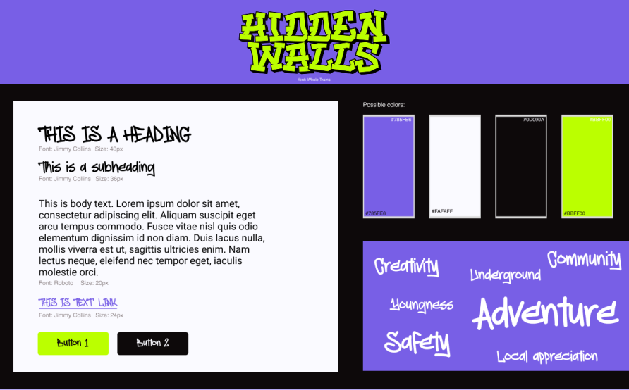
•
Wireframes
The wireframes translated the initial sketches into structured layouts.
Following a mobile-first approach, I first designed the
mobile experience before adapting it for desktop.
I also drew inspiration from Airbnb's map interface for
intuitive location browsing and tattoo artist websites for
their immersive visuals and bold presentation, combining usability with a
visually engaging experience.
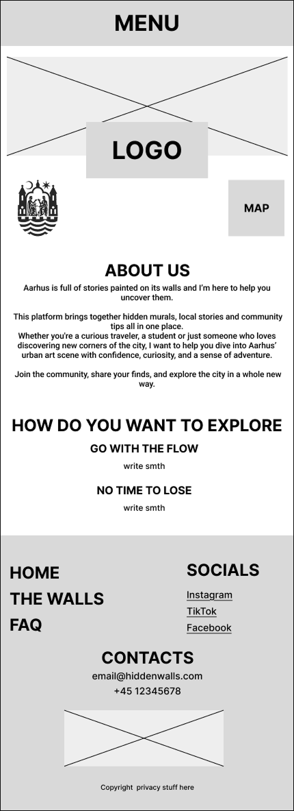
Homepage (mobile version)
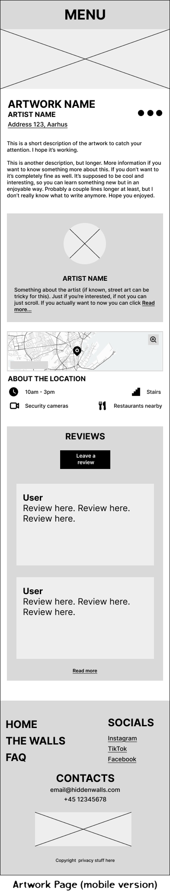
Artwork Page (mobile version)
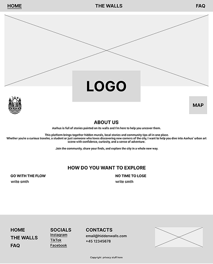
Homepage (desktop version)
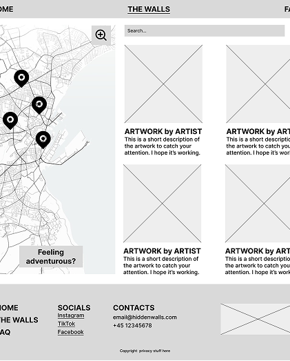
The Walls Page (desktop version)
02.8 Usability Testing
The prototype was tested with five users to evaluate the overall user experience and gather feedback on usability, navigation, and content clarity.
Key Findings
Interactive map and visual storytelling were highly engaging.
Navigation between pages was intuitive and easy to follow.
Increase font sizes to improve readability.
Simplify the homepage layout to reduce visual clutter.
Add brief instructions for map filters and pins.
Keep artist stories and interactive features as core elements of the experience.
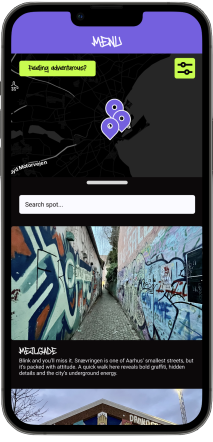
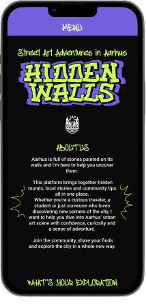
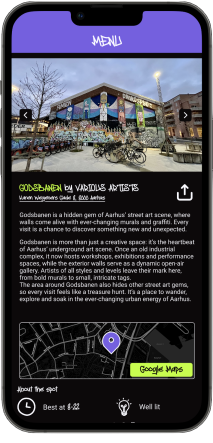
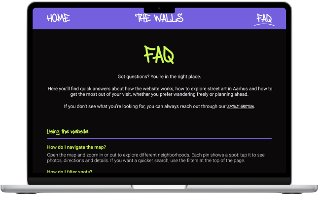
Take-aways and Further Development Ideas
I really enjoyed working on this project, even though it was created at
the beginning of my journey as a designer, when I was still developing
my confidence in Figma. Looking back, there are several things I would
improve.
For example, I would redesign the desktop navigation to remain
fixed instead of scrolling with the page, making it easier to
navigate. I would also make the
homepage CTAs more prominent, as they are a key part
of the user experience and deserve greater visual emphasis.
That said, I'm still very proud of the project's visual identity, and
it taught me a great deal about creating a cohesive design system and
designing custom icons. More importantly, the research process ensured
that the final design wasn't just visually appealing, but also
addressed real user needs, resulting in a more
intuitive and meaningful experience.